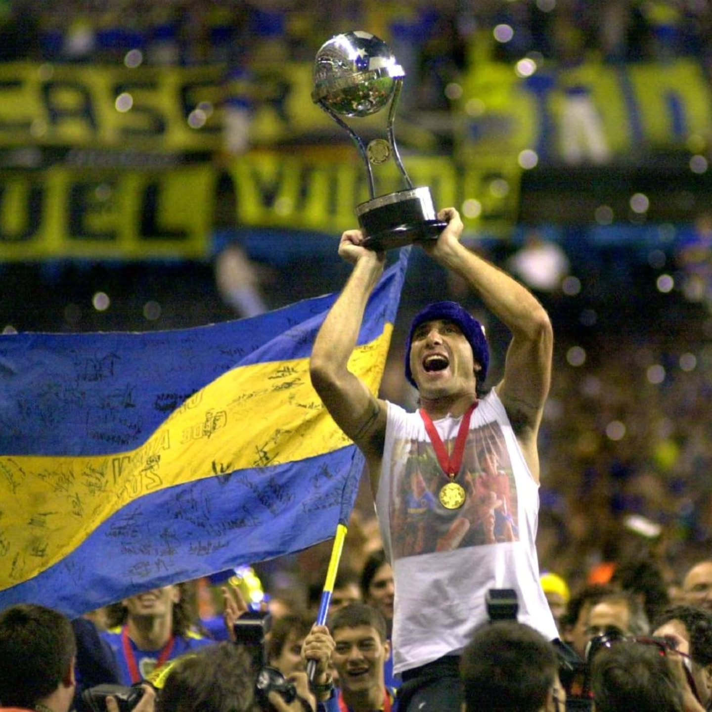
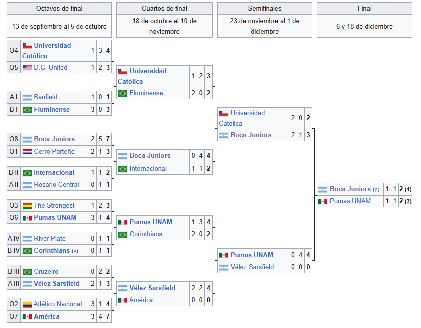
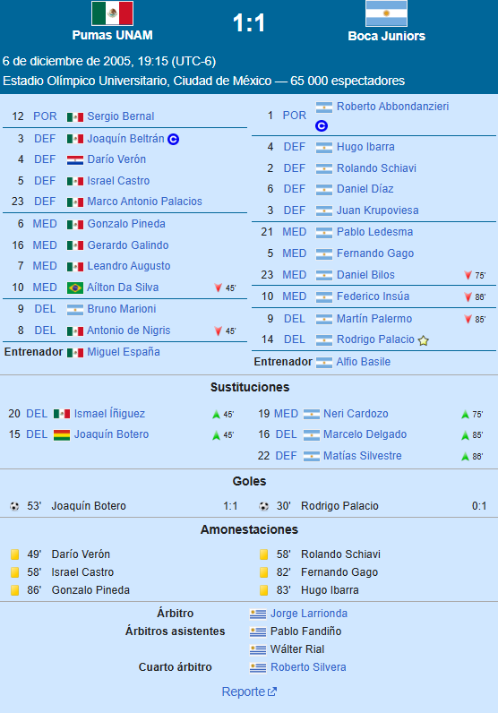
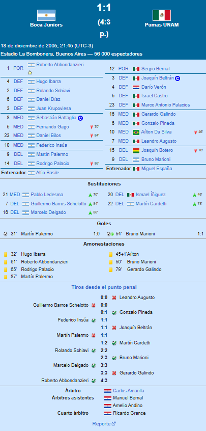

⬅ Inicio
LA SUDAMERICANA

Torneo
La Copa Sudamericana 2005, denominada por motivos comerciales Copa Nissan Sudamericana 2005, fue la cuarta edición del torneo organizado por la Confederación Sudamericana de Fútbol, en la que participaron equipos de doce países: Argentina, Bolivia, Brasil, Chile, Colombia, Ecuador, Estados Unidos, México, Paraguay, Perú, Uruguay y Venezuela. Fue la primera edición del certamen a la que fueron invitados equipos pertenecientes a Concacaf.Boca Juniors se consagró campeón, revalidando el título obtenido en la edición anterior, y coronándose como el primer bicampeón en la historia de la competición, quedando también hasta la fecha como el único bicampeón consecutivo. El logro llegó tras vencer a los Pumas de la UNAM, de México, por medio de la definición por penales, tras empatar los dos encuentros de la final, siendo esta la primera vez en la que se llega a esta instancia en una final del susodicho certamen. La consagración le permitió al cuadro Xeneize disputar la Recopa Sudamericana 2006 ante São Paulo de Brasil, campeón de la Copa Libertadores 2005. Además, clasificó directamente para los octavos de final de la Copa Sudamericana 2006.
Formato
El torneo se desarrolló plenamente bajo un formato de eliminación directa, donde cada equipo enfrentaba a su rival de turno en partidos de ida y vuelta. De los 34 participantes, solamente Boca Juniors último campeón, River Plate invitado por Conmebol, Vélez Sarsfield mejor clasificado de Argentina y los tres invitados de Concacaf iniciaron el torneo desde los octavos de final. Los restantes 28 debieron disputar las dos fases clasificatorias, en donde las llaves se establecieron enfrentándose los equipos del mismo país de origen. De allí salieron los últimos 10 clasificados a las fases finales, compuestas por los octavos de final, los cuartos de final, las semifinales y la final, en la que se declaró al campeón. Se implementó, por primera vez, la regla del gol de visitante, que se aplicó en caso de igualdad de puntos y diferencia de goles al finalizar los dos encuentros de la llave en cualquiera de las fases del torneo, y que se mantuvo vigente hasta la edición 2022, cuando fue eliminada.
Fases Finales
Las fases finales estuvieron compuestas por cuatro etapas: octavos de final, cuartos de final, semifinales y final. A los 10 ganadores de la primera fase se les sumaron Boca Juniors, River Plate, Vélez Sarsfield —todos de Argentina—, América, Pumas UNAM —ambos de México— y D.C. United —de Estados Unidos—. A los fines de establecer las llaves de los octavos de final, se tuvo en cuenta la denominación que se le asignó a cada equipo; en el caso de los cuadros que clasificaron desde la primera fase, dicha denominación fue determinada por el nombre del cruce que ganaron en aquella instancia. De esa manera, el Octavofinalista 1 enfrentó al Octavofinalista 8, el 2 al 7, el 3 al 6, y el 4 al 5; mientras que los clasificados de Argentina y Brasil se enfrentaron uno contra aquel del otro país que tuviera asignado el mismo número (Argentina I ante Brasil I, Argentina II ante Brasil II, y así sucesivamente).
Clasificados a Octavos de Final
Clasificados a la primera fase
Fase eliminatoria

Partido IDA

Partido VUELTA
